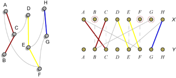

It will come as no great surprise, but the author of this problem came up with it while reading a local newspaper's end-of-year economics summary, seeing a number of overlaid charts in it and then wondering how to minimize the number of charts needed.
Consider two simple charts: A and B. They can be related to each other in one of three ways: all of A's values can be strictly less than all of B's values (A < B), in which case they can appear on the same overlaid chart; their lines can cross (A \ B), in which case they can't appear on the same overlaid chart; or all of A's values can be strictly greater than all of B's values (A > B), in which case they can appear on the same overlaid chart.
Given this sort of relationship we can construct a graph, where the nodes are simple charts and there is an edge from A to B iff A > B. This gives us a directed, acyclic graph that is its own (non-reflexive) transitive closure. Any directed path in the DAG represents a valid composite chart. To solve the problem, then, we want to find the minimum number of paths that we need so that all nodes are part of exactly one path.
How would we find the paths? We may start from a chart that is relatively high, then find one below it, and keep adding lower charts, until we cannot find more. This completes our first overlaid charts. We start the same process for the second path, and so on. In any step, there might be several choices for the next chart we can use. In order to minimize the number of paths, we need to make a good choice in each step.
Now, behold, the Aha moment of this problem.

For the DAG with n points, we make a bipartite graph with n points on each side. Draw an edge from XA to YB if the relation A > B holds, i.e., B can be the next chart below A. Observe (yes, you really need to see it, instead of hear it!) how any path in the DAG corresponds to a series of edges in the bipartite graph; and how any matching of the bipartite graph corresponds to a way to partition the DAG into paths. Any unmatched point XA on the left side corresponds to the lowest point on a path (the lowest chart on an overlaid graph). Each path has exactly one such point. We want to minimize the number of paths, the same as minimizing the number of unmatched points on the left side. That is, we want to find the maximum matching in a bipartite graph.
Here is the judge's solution in C++.
namespace Solver {
int N,K;
bool cbn[111][111]; // can be next
int prev[111];
bool visited[111];
bool FindNextDfs(int a) {
if(a<0) return true;
if(visited[a]) return false;
visited[a]=true;
for (int i=0;i<N;i++) if(cbn[a][i]) {
if(FindNextDfs(prev[i])) {
prev[i]=a;
return true;
}
}
return false;
}
int Solve(const vector<vector<int> >& stock) {
N=stock.size(); K=stock[0].size();
int i,j,k;
for(i=0;i<N;i++) {
for(j=0;j<N;j++) {
if(i==j) cbn[i][j]=false;
else {
cbn[i][j]=true;
for(k=0;k<K;k++)
if(stock[i][k]<=stock[j][k]) cbn[i][j]=false;
}
}
}
memset(prev, -1, sizeof(prev));
int ret=0;
for(i=0;i<N;i++) {
memset(visited, 0, sizeof(visited));
if(!FindNextDfs(i)) ret++;
}
return ret;
}
Note that this is indeed the bipartite matching program. We named the variables as if we are really constructing the set of paths and unaware of the bipartite graph. In fact, it's a worthy exercise to go over this without bipartite matching in your mind.
This completes the solution of our problem. But we may continue with more stories.
In combinatorics, DAGs are called partially ordered sets, or posets. A directed path is called a chain in the poset. An independent set in the DAG, corresponding to a set of points where no '>' relation holds between any two of them, is called an anti-chain. Our problem is then, given a poset, find the minimum number of chains needed to cover all the points.
If we see an anti-chain of size α, we need at least α chains to cover the set, because each chain can contain at most one of these points. Suppose we find the maximum anti-chain to be of size α*, we know the answer must be at least α*. Is this enough though?
We are ready to introduce one of the classical theorems in combinatorics.
Theorem (Dilworth 1950) In a poset, the minimum number of chains needed to cover the whole set equals the size of the biggest anti-chain.
Dilworth's theorem is closely related to other classical theorems in combinatorics. In fact it is equivalent to Hall's marriage theorem on bipartite graphs, and the max-flow-min-cut theorem.
The number in Dilworth's theorem is (naturally) called the width of the poset. Our algorithm above thus finds the width of a poset. Interested readers might find, in our input file, perturbed copies of the following posets:
Partially ordered set - Dilworth's theorem